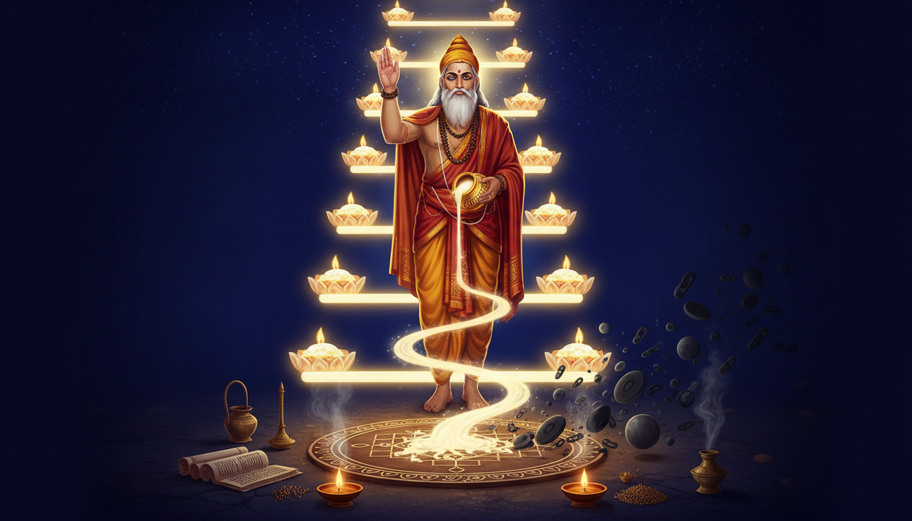

Almost every remedial system in the world works by addition. Your Saturn is afflicted, so add a Saturday ritual. Your Moon is afflicted, so add a silver gem. Your chart has a dosha, so add a fast, a mantra, a donation to a temple. The remedy tradition of India is vast, sophisticated and largely built on the principle that a deficiency is corrected by supplying what is missing.

Yajnavalkya, the 8th-century BCE Vedic sage who gave us the Brihadaranyaka Upanishad, built something structurally different. His method is subtractive. And he did not merely theorise it — he demonstrated it in public, in a royal court, against the finest minds of his age, and then handed down two instruments: a graded ladder of fallbacks for when your primary light is obstructed, and a negation technique for stripping away what does not belong to you.
This matters right now because a chart under heavy transit pressure is precisely the situation Yajnavalkya's system was designed for. The ladder tells you which support to lean on when the one you normally depend on goes dark. The negation technique tells you what to remove. Neither of these requires you to believe that a planet is angry, and neither requires you to buy anything.
A Note Before You Begin
What follows draws on the Yajnavalkya Smriti, the Yoga Yajnavalkya, the Brihadaranyaka Upanishad, the Taittiriya Upanishad, the Ashtavakra tradition and the classical nakshatra system. These are contemplative, ritual and astrological frameworks, not medical, psychological, legal or financial advice. Mantra, prāṇāyāma, fasting and ritual discipline are practices of attention and intention — powerful for focus and consistency, and never a substitute for qualified care. If you are pregnant, fasting, under medication, managing a mental health condition, or in crisis, consult a qualified practitioner before beginning any discipline. Treat this material as a framework for self-observation and disciplined attention, not as a command from a divine authority. Astrological indications describe tendencies and timing pressures — never certainties about events.
The Debate That Made Him: King Janaka's Court
Yajnavalkya's public proving ground was the Bahudakshina Yajña, hosted by King Kriti Janaka of Mithila (Videha) in modern Bihar. The king offered a thousand cows with gold horns to the brahmin judged best — the Brahmishṭha.
Yajnavalkya did not enter the competition. He sent his disciple Samasrava to simply take the cows home. The uproar in the palace was led by Aśvala, who wondered why this man proclaimed himself the greatest. Yajnavalkya's reply was the first demonstration of his method: he did not claim to be the greatest Brahmishṭha, and whoever the greatest was should be honoured — he merely wanted the cows. He had used the text against its own literalism. The competition had already named the prize; he simply collected it.
What followed was a structured elimination. Yajnavalkya defeated, in turn, Aśvala, Uddālaka Āruṇi, Bhujyu, Śākalya, Ārtabhāga, Uśasta and Kahoḍa. Each exchange worked the same way: a question was posed, and Yajnavalkya answered it in terms the questioner had not proposed. He did not out-argue his opponents. He out-framed them.
Note what this is actually a demonstration of. In a system that rewards addition — more wealth, more cows, more knowledge, more ritual — Yajnavalkya won by taking what was already owed. This is the first principle of the fallback method, and it is worth naming plainly: before you add anything, find out what is already yours to take.
Gargi, and the Silence That Was the Point
Gargi was a female scholar, one of the nine gems of Janaka's court, and the only opponent in the debate who came back twice.
In the first exchange (Brihadaranyaka 3.6) she asked successively about the support of each element in the world, building a hierarchy. When she pressed toward the support of Brahman itself, Yajnavalkya answered: "Do not, O Gargi, question too much, lest your head should fall off. You are questioning too much about a deity whom we should not ask too much."
Read this as an astrologer and it is not a threat. It is a boundary declaration. Gargi had pushed the enquiry past the point where the instrument could carry it. Yajnavalkya names the edge of the method and stops there — he does not pretend the edge does not exist, and he does not blunder past it with a bad answer. That is a skill. In remedial work, the practitioner who will not name a limit for the client is not being rigorous, they are being reassuring.
But Gargi returned. In 3.8 her questioning had shifted: she asked about the support of what is above the sky, below the earth, between them, and what people call past, present and future. Yajnavalkya answered: space. She asked what supports space. And he gave the passage that is the hinge of the entire system:
"This imperishable, Gargi, is the seer but isn't seen; is the hearer, but isn't heard; is the thinker, but isn't thought of; is the perceiver, but isn't perceived. Other than this, there is no seer. Other than this, there is no hearer. Other than this, there is no thinker. Other than this, there is no perceiver."
The debate ended with Gargi herself declaring Yajnavalkya the most superior brahmin of them all. The one who stopped her, she is the one who certifies him. Yajnavalkya is credited by the scholar Witzel with coining the term Advaita — the non-duality of Ātman and Brahman — and Scharfstein counts him among the earliest philosophers in recorded history.
Maitreyi and the Fire That Would Consume Everything
Yajnavalkya had two wives: Maitreyi and Katyayani. Maitreyi is described as a brahmavādinī — a discusser of Brahman — while Katyayani is described as striprajña, knowledgeable in what is traditionally woman's role. In the epic Mahabharata the picture shifts again: Maitreyi is a young beauty and an Advaita scholar who never marries.
The Maitreyi dialogue in the second chapter of the Brihadaranyaka Upanishad is the most famous passage in the Upanishads, and it opens with a question that is practically speaking about inheritance: she asked whether she would become immortal with all the wealth in the world. Yajnavalkya denied it. Her reply is the hinge: "What should I do with that by which I do not become immortal?"
The answer he gives runs through a famous negation of everything she might have chosen instead — wealth, objects, the senses, the mind — and lands on the Self as the only thing worth having. The dialogue survives in two manuscript recensions, the Mādhyandina and Kāṇva, with significant literary differences but the same philosophical theme.
The later tradition adds a detail that is quietly about how knowledge is held rather than merely possessed. In the Maitreyi dialogue, the eye is held to be the cause of material wealth, since wealth is created through sight, while the ears represent spiritual wealth, since knowledge is shared through listening. Maitreyi — a woman who, in the later Mahabharata, never marries — is the one who extracts the teaching that is transmitted by being heard.
The Light Ladder: The First Fallback Protocol in the Vedic Tradition
Here is the practical heart of the article, and it comes from the fourth chapter of the Brihadaranyaka Upanishad, in a dialogue between Janaka and Yajnavalkya on the nature of the Ātman across states of consciousness.
The king asks a simple question: what is the light of man?
"The sun, O King; for, having the sun alone for his light, man sits, moves about, does his work, and returns."
The king presses. The sun has set — what then?
"The moon indeed is his light."
The sun and the moon have both set?
"Fire indeed is his light."
The sun, the moon and the fire are all gone?
"Sound indeed is his light; for, having sound alone for his light, man sits, moves about, does his work, and returns. Therefore, O King, when one cannot see even one's own hand, yet when a sound is raised, one goes towards it."
And when the sound is hushed too?
"The Self indeed is his light; for, having the Self alone for his light, man sits, moves about, does his work, and returns."
Stop and look at what this actually is. It is not philosophy in the abstract. It is a graded support hierarchy with five rungs, each one internal to the last, and — this is the crucial detail — each rung is specified for the condition in which the rung above it has failed.
| Rung | The Light | Status when the previous rung fails |
|---|---|---|
| 1 | Sūrya — the Sun | Primary light. Obstructed by eclipse, combustion, dispossession. |
| 2 | Chandra — the Moon | The light that remains when the Sun is gone. Reflected, cooler, slower. |
| 3 | Agni — Fire | The light that remains when both luminaries have gone. Kindled by your own hand. |
| 4 | Śabda — Sound | The light that remains when fire is out. Only vibration, no image. |
| 5 | Ātman — the Self | The light that remains when sound is hushed. |
Now apply this to a chart. This is the part that matters for anyone reading this in a year when their Saturn, Sun or Moon is loaded.
When the Sun is obscured, you do not wait for it. You descend a rung and you take the Moon's light. Rung 1 is the visible, the external, the socially-legible source — career, status, the body's own brightness, the authority that other people can see. When that is under eclipse or combust, the traditional and the astrological advice converge: you cannot be the Sun's vehicle right now, and pretending otherwise is what produces the burn.
When both luminaries are down, you take Fire. Rung 3 is remarkable because it is the only rung you kindle yourself. Homam, tapam, the daily fire, the ritual lamp, the discipline that generates its own heat. Agni is the one light in the sequence that does not have to arrive from anywhere. A person with a seriously afflicted Sun and Moon — the classic double-affliction — is not a person without resources. They are a person whose resource is the flame they tend.
When fire is out, you take Sound. Rung 4 has no image at all. This is the rung of mantra, of chanting, of the voice, of the sound that reaches you in the dark and which you walk toward. "When one cannot see even one's own hand, yet when a sound is raised, one goes towards it." Sound as navigation.
And when even sound is hushed, there is the Self. Yajnavalkya places this last, but he does not place it low. He says that he who knows this truth remains "controlled, at peace, patient and full of faith" and "everyone comes to be his self" — and in the words of the translators, he "sees self in Self, sees all as Self."
That is a genuinely complete protocol. Every remedial tradition has a primary technique and then a lot of local improvisation. This is a single ordered ladder where each fallback is defined by the failure of the one above, and it terminates in something that cannot be obstructed by any graha at all.
Neti-Neti: The Remedial Method of Subtraction
The doctrine Yajnavalkya is most famous for expounding is neti, neti — "not this, not this."
The principle enters the Brihadaranyaka Upanishad in the ninth brāhmaṇa of its third chapter, the longest in that chapter, and it works alongside an analogy between the physical features of a man and those of a tree. About the Self, one can only say neti, neti. Yajnavalkya himself describes the Self by a series of negations: it is not graspable, not destructible, not attached, not disturbed by anything good or bad done by himself. Shankara and Rāmānuja interpreted the phrase differently — Shankara as a complete negation, Rāmānuja as an acknowledgment of the limits of human language and conceptualisation.
Here is why this is a remedial technique and not just a philosophical one.
Traditional Jyotiṣa remedies are almost entirely additive. You add a mantra for the afflicted graha. You add charity to its deity. You add a colour, a stone, a fasting day, a specific recitation count. The logic is compensatory: the planet is under-supplied, so supply it.
Yajnavalkya's method inverts this. Neti, neti applied to a chart means: strip away the claim that is not yours. Practically, this is a set of questions a practitioner asks, and a set of practices a practitioner prescribes:
- Not this house. If a graha occupies a bhāva it does not own, its claim on that area of life is a borrowing, not an entitlement.
- Not this identity. Not "the person who has this problem" — which is the single most expensive sentence a client can speak.
- Not this outcome. Not the specific result the transit appears to demand. A transit is a pressure, not an instruction, and a pressure does not get to name its own conclusion.
- Not this debt. Not the karma of another person, and not the karmic debt attributed to a previous birth, taken as a personal sentence. Yajnavalkya is one of the earliest expositors of karma and rebirth in recorded literature, and he puts the karma doctrine at the service of freedom rather than fate: "Now as a man is like this or like that, according as he acts and according as he behaves, so will he be."
And then the practice that carries it. In the Yājñavalkya Smṛti — the dharma-śāstra attributed to him, and one of the two great law codes of classical India alongside the Manusmṛti — the third book is prayāścitta, atonement, expiation, the treatment of crime and penance. Yajnavalkya's position there is that through prayāścitta the soul and the world are pleased. The text places the act of giving (dāna) at the essence of dharma and elevates yoga and self-perception (ātmadarśana) as the highest form of dharma. This is a system that removes weight rather than adding ceremony.
Here is the occult method that most people never find, because it is hidden in a scripture usually classified as law. The Yājñavalkya Smṛti was composed between the 3rd and 5th century CE, well after the sage's life, probably in the Mithila region — the same region as the sage himself — and is organised in three books: ācāra (customs, 368 verses), vyavahāra (legal procedure, 307 verses) and prayāścitta (atonement, 335 verses), 1,010 ślokas in total. It was made famous across South Asia by Vījñāneśvara's Mitākṣarā, a commentary from the mid-twelfth century. And among its sources are references to Greek astrology, known in India since the 2nd century as the Yavanajātaka — a text whose vocabulary of long loans and coin-denomination shows how far the exchange had already travelled.
Read that again: the "Hindu Law" that the British treated as the basis of what they called Hindu law contains, in its dating, its own evidence of Hellenistic astrological contact. The remedy tradition and the transit tradition are not separate lineages. They are the same lineage, and Yajnavalkya sits at the join.
The Partridge Trick: What Really Happened in the Taittiriya Classroom
The Taittiriya Upaniṣad is named for the partridge birds, and the story of how it got its name is one of the strangest transmissions of knowledge in the corpus.
Vaiśampāyana, Yajnavalkya's teacher, grew angry with him and demanded that he give back all the knowledge he had learned. Yajnavalkya vomited all of it. The guru then instructed his other disciples to take the form of partridges — taittiriya birds — and consume what was regurgitated. The point of the story, in the Upanishad's own telling, is Yajnavalkya's genius: he had taken his guru's knowledge and added his own insight to it, and the guru, seeing that, was pleased and told the others to learn from Yajnavalkya. When a student has absorbed knowledge and gives it out, it becomes more palatable to those who did not understand it directly from the teacher's discourse.
The story is usually told as a joke about a genius. But look at the occult mechanics it preserves. A body was used as the medium. The knowledge was transmitted physically, and the recipients had to take a non-human form to receive it. And the final claim is the one that matters most for a reader today: the one who can re-emit the teaching is the one qualified to teach it. Knowledge was never held by Yajnavalkya for his own use. It was held as something to be given back.
That is the transmissible core of his method, and it is why the Yajñavalkya Smṛti opens with him addressed as yogesvara — "king of yogis" — and why the tradition credits him with a body of works including the Yoga Yājñavalkya, the Yogi Yājñavalkya-smṛti, the Bṛhad Yājñavalkya and the Vṛddha Yājñavalkya.
Yoga Yajnavalkya: Kundalini, the Five Bijas, and the Fire in the Navel
The Yoga Yājñavalkya is a classical Sanskrit yoga text written as a dialogue between Yajnavalkya and Gargi — the same two figures who appear in the Upanishad debates, and the same Gargi who came back twice. The text is organised into twelve chapters containing 504 verses.
It has the eight components of yoga as Patanjali's Yoga Sūtras has them — yama, niyama, āsana, prāṇāyāma, pratyāhāra, dhāraṇā, dhyāna, samādhi — but with different goals, and it contains material the Yogasūtras do not have, most notably the concept of kundalini. The tradition holds it to have been influential in the development and practice of Indian yoga before the 12th century, and its manuscript history is genuinely old: two pre-10th-century CE palm-leaf manuscripts in Sanskrit, plus many more versions in regional languages, with enough variation to indicate compilation and revision by multiple authors.
Three details from it are of immediate practical use to anyone working with remedial astrology.
The location of the practice. Solitary places are the best venues for yoga; a mathā — a hut in a forest — is ideal, but any private place free from distractions, high winds or intense sunshine will do. A seat made of kuśa grass or a solid ground with a deer-skin mat is preferable. This is a specification for a closed, protected, quiet space, which in a remedial context means: the practice is not performed in a distracted house, and it is not performed in public. It has a defined room.
The five bijas and the five chakras. The text describes the inner fire as residing in the middle part of the body, which Yajnavalkya calls the Nabhi (centre) and a Chakra. Five deities are addressed by chanting the five letters that are the sounds of the chakras as bijamantras — laṃ, vaṃ, raṃ, yaṃ, haṃ — to become one with Parameshvara. Verses 8.11–15 instruct the yogin to meditate on these respective body systems as deities with the help of the Om mantra, which is said to lead to dissolution and the realisation of Brahman-Puruṣa. After mastery is achieved with the aid of envisioning the five deities within the body, the text states that the yogin overcomes three doṣa.
The three doṣas. This is the detail that ties the yoga text to the astrological one with unusual precision. The yogic doṣa here is not a moral category but a physiological-humoral one — and it is the same word, the same three-fold structure, that the medical and the astrological traditions use for the fault of a planet in a house, the fault of a lagna, the fault of a birth-time, and the fault of a transit. The Yoga Yājñavalkya tells you that when the practice is done properly, the three doṣas are overcome. In a chart with three doṣas active — and most difficult charts have two or three running at once — this is a direct statement about what the practice is for.
And the purification chapters. Chapters five and six of the Yoga Yājñavalkya deal specifically with the means of cleansing the body and mind. The first ten verses of chapter five restate the requirement to always practise the yamas and niyamas, to avoid anger against anyone or anything, to follow dharma truthfully, to respect and learn from the guru, and to pursue the proper goals of life without craving for rewards — the nishkama karma of the Bhagavad Gītā, action without grasping at its fruit. Note the order: the purification of body and mind comes before the advanced practice, and the ethical restraint comes before the technique.
The Last of the Twenty-Four: The Gayatri in His Hands
Here is the fact about Yajnavalkya that is almost never mentioned, and it is the strongest claim to occult authority in the entire article.
According to the Purāṇas, only twenty-four rishis since antiquity have understood the whole meaning of — and thus wielded the whole power of — the Gayatri Mantra. Vishvamitra is supposed to have been the first. Yajnavalkya was the last.
Consider what that means. The Gayatri is the single most-deployed remedial mantra in the world. It is the mantra recited at the upanayana ceremony and by dvija men daily; the Manusmṛti says of it that "there is nothing greater than the Savitri (Gayatri) Mantra"; it is praised in the Harivamsa and the Bhagavad Gītā; and it was written by Vishvamitra as Rigveda 3.62.10. Every auspicious remedy, every morning recitation, every śanti ritual in the mainstream tradition runs on this verse.
And the tradition holds that only twenty-four people have ever fully activated it — and the last of them is the subject of this article. Yajnavalkya is not one rishi among a category. He is the terminal node of a chain of twenty-four. The first link wrote the verse; the last link carried its full power.
And there is a second, quieter detail. Yajnavalkya was the seer who received the Śukla Yājurveda — the White Yajurveda — and he is described as the founder of the Śukla Yājurveda tradition. His own words in the Yājñavalkya Smṛti (3.110) are: "Anyone who desires to master yoga should know the Aranyaka that I received from the sun as well as the yoga treatise that I proclaimed."
He says he received the Āranyaka from the sun. That is rung one of his own ladder, made autobiographical.
The Method, Step by Step
- Find what is already owed to you. Yajnavalkya sent a disciple to collect the cows and did not argue about the title. Before adding any remedy, audit what the chart, the tradition or the situation already entitles you to take. Most remedies are given because nobody checked.
- Identify which light is obstructed. Sun, Moon, Fire, Sound, or the Self. Name the rung honestly. Do not perform a Sun remedy in the year the Sun is eclipsed in your chart.
- Descend one rung, and only one. The ladder is a fallback, not a ladder to climb. One step down, then work there properly. The fire rung is the one most people can actually reach — and it is the one rung that you kindle yourself.
- Declare the boundary out loud. Yajnavalkya told Gargi to stop asking, and said why. Name where your method stops working for this person. A method with no stated limit is not a method, it is a reassurance.
- Negate what is not yours. Neti, neti. Not this house, not this identity, not this outcome, not this debt. Write it down; the writing is what makes the negation stick.
- Purify before you practise. Chapters five and six: cleanse body and mind first, hold the yamas and niyamas, avoid anger, follow dharma truthfully, respect the teacher, work without craving for the fruit.
- Set the practice in a closed, quiet room. A mathā if you can build one; at minimum a private place free of distraction, wind and harsh sun, a kuśa grass seat or a deer-skin mat.
- Work with the bijas and the doṣas. Laṃ, vaṃ, raṃ, yaṃ, haṃ with the Om mantra, the five deities envisioned within the body, the Nabhi fire at the centre — and the specific intention of clearing the three doṣas that the text names.
- Give. Dāna is the essence of dharma in the Smṛti, and it is the one remedy that works identically at every rung of the ladder.
- Re-emit. Yajnavalkya's own criterion for knowledge, from the partridge story: a teacher qualifies by being able to give the teaching back. Hold the practice so it can be transmitted, not merely accumulated.
What Yajnavalkya Means for Your Chart Specifically
- Sun eclipsed or combust in your chart — the primary light is unavailable. Do not run a Sun-ruling practice; descend to the Moon rung. Chandra-led remedies, evening recitation, cool silver/white, the Moon's slower cadence. Let the eclipse be the reason you rest the Sun identity rather than the reason you push it.
- *Sun and Moon both afflicted — the classic double eclipse-year configuration — the Moon rung is also out. Go to Fire*. This is the rung you kindle yourself: homam, tapam, the daily lamp, disciplined heat generated by your own effort. A double-afflicted chart is not a chart without resources; it is a chart whose resource is the flame it tends.
- Fire and sound both unavailable — a period of genuine depletion, when external supports are not functioning. This is rung four, sound only: mantra, chanting, the voice, the sound you walk toward. Yajnavalkya's own line applies — when one cannot see even one's own hand, yet when a sound is raised, one goes towards it.
- Everything obstructed — rung five. The Self. He who knows this truth "becomes quiet, subdued, satisfied, patient and collected." A period when no transit remedy will work is a period when the only effective practice is the internal one.
- A graha sitting in a bhāva it does not own — this is where neti-neti earns its keep. The planet is borrowing that area of your life. The remedy is not to propitiate it more but to withdraw the claim: stop treating that house as yours to direct.
- Three doṣas running at once — the Yoga Yājñavalkya names the target explicitly: the practice, done with the bijas and the five deities in the body, overcomes the three doṣas. Do the purification chapters first; the advanced technique without the yamas and niyamas is the commonest failure mode in this work.
- A Shani-heavy year — Shani in the 6th, 8th or 12th, or Shani aspecting the 2nd and 11th — the traditional floor is discipline, structure and honest accounting. In Yajnavalkya's frame this is rung three: Fire. Shani's lesson is heat, patience and endurance, and the rung that answers a Saturn that has taken your outer lights is the one you light yourself. Saturn's day is Saturday; Shani's colours are blue and black; his numbers are eight, seventeen and twenty-six; his mantra in the tradition is "Om Kakadhvajaya Vidmahe Khadga Hastaya Dhimahi Tanno Mandah Prachodayat" — let me meditate on him who has a crow in his flag, who holds a sword in his hand; let him give me higher intellect and let Shanishvara illuminate my mind. Intellect and illumination. That is rung four, rung five, and rung three in three lines.
- Jupiter-ruled Punarvasu, or Guru dominant in your chart — Punarvasu is the seventh nakshatra, ruled by Jupiter, its presiding deity Aditi the mother of the gods, its symbol a quiver of arrows, and its significations are renewal, restoration, optimism and the ability to recover from adversity. Yajnavalkya is the seer of the White Yajurveda — the Yajur tradition, the home of the Gayatri. Where Guru is strong, the mantra tradition is natively available to you, and it is the tradition in which Yajnavalkya was the last of twenty-four.
- You keep adding remedies and feel no better — you are on the additive path and it is not working, because addition was never the diagnosis. Neti, neti. Remove one thing this month and observe what changes. The traditional remedy for a chart under too much remedy is subtraction.
- You are trying to learn this properly rather than scavenge it — Yajnavalkya gives you a legitimate lineage position: the seer of the Śukla Yājurveda, the founder of its tradition, the holder of the last complete understanding of the Gayatri, author of the Smṛti and the Yoga, and the mind behind the Light Ladder itself. Work from reliable editions, start with the Smṛti's prayāścitta and the Yoga Yājñavalkya's purification chapters, and take the technique slowly.
The Final Word
Yajnavalkya's achievement was not a miracle. It was a method: take what is already yours, name the boundary of your knowledge, refuse to argue about titles, and instead show — in a royal court, to the greatest minds of the age, and twice to the same formidable woman — what is actually the case.
The Light Ladder is the part most people will want, because it converts a frightening transit into a sequence. Sun. Moon. Fire. Sound. Self. Each rung defined by the failure of the one above it. The ladder terminates in something no graha can obstruct, which means the ladder never runs out. The neti-neti is the part that will save you the most money and the most ego: it takes away the claims that were never yours and leaves the Self, which is the one rung that cannot be eclipsed.
And the partridge story explains why the method is worth learning from him specifically. He was asked to give back what he had received, and he gave it back — through a body, physically, to students who had to change shape to receive it. The tradition then certified him: the twenty-fourth and last rishi to hold the full power of the Gayatri, the seer of the White Yajurveda, the king of yogis.
For anyone reading a chart with two luminaries loaded this year, the answer is not a longer ritual calendar. It is: descend one rung, purify before you practise, negate what is not yours, and keep the practice in a closed and quiet room. Then give it away.
—
Sources: Wikipedia — Yajnavalkya; Category:Rishis; Yajnavalkya Smriti; Yoga Yajnavalkya; Brihadaranyaka Upanishad; Taittiriya Upanishad; Maitreyi; Ashtavakra; Ashtavakra Gita; Vishvamitra; Nakshatra; Punarvasu; Shani.
Sources
No source URLs were returned by NotebookLM for this run.